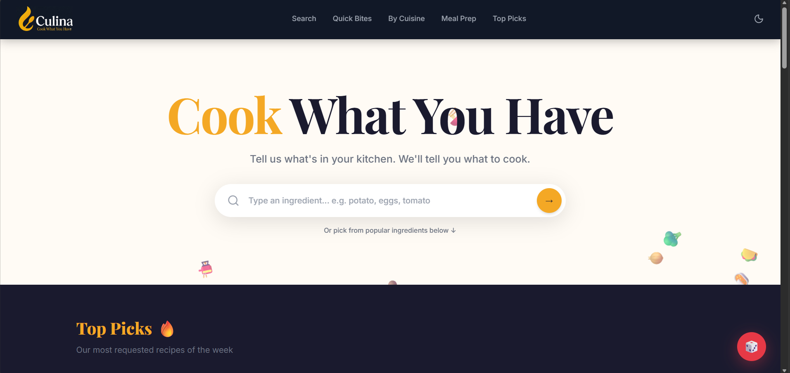
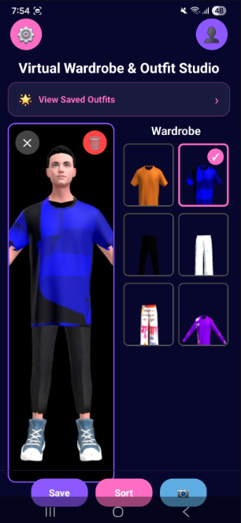

Hi, I'm Mitali Khamkar, a B.Sc. Information Technology graduate with a strong interest in Full-Stack Web Development and Software Engineering. I enjoy building practical and user-focused applications that solve real-world problems. Throughout my academic journey, I have worked on projects involving modern web technologies, gaining hands-on experience in both front-end and back-end development.
I have developed projects such as Culina – Cook What You Have, a recipe recommendation platform that helps users discover meals based on available ingredients, and Glamware, a virtual wardrobe and fashion styling application that promotes sustainable fashion through digital outfit management. My technical skills include JavaScript, React.js, Node.js, Express.js, MongoDB, HTML, CSS, and Git/GitHub.
Currently, I am focused on strengthening my development skills, exploring modern software technologies, and preparing for opportunities in the software industry. I am passionate about continuous learning, problem-solving, and building innovative solutions that create meaningful user experiences.

Click the image to visit the live Culina website.

(Click on the image you will directly navigate to the Google Drive link for Glamware.There you can download the APK file of Glamware.)
Email : mitalikhamkar2005@gmail.com
LinkedIn : Mitali Khamkar
GitHub : Mitali Khamkar
Portfolio : https://mitalikhamkar-portfolio.vercel.app/
Phone : +91 8850752240
Address : Mumabi,kandiwali (W)